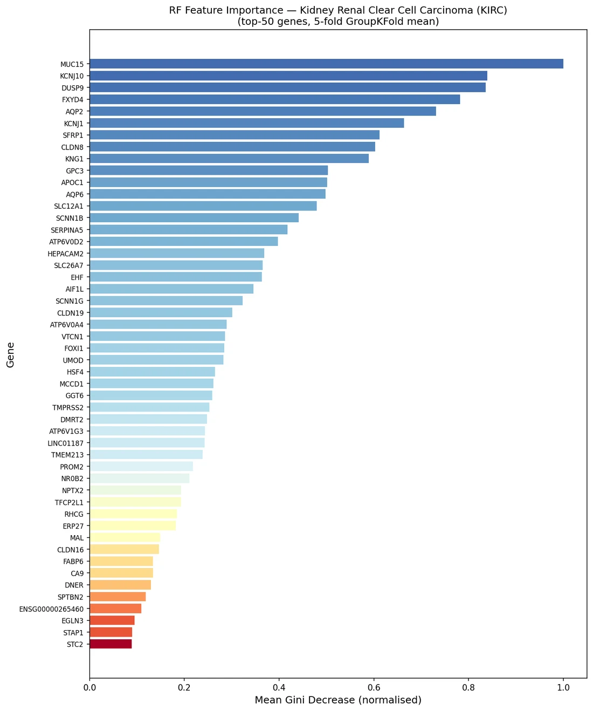
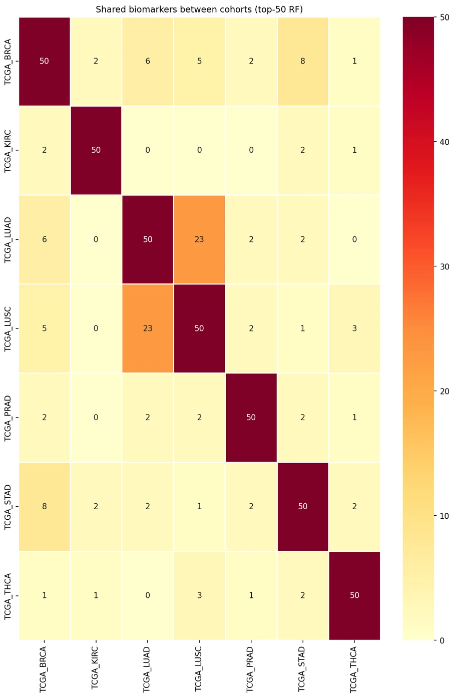
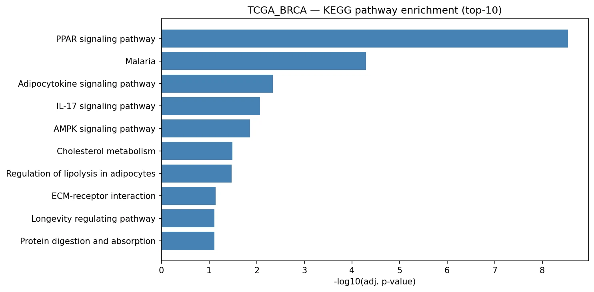
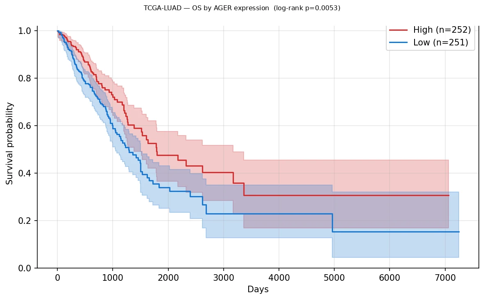

Identification of Biomarkers from Gene Expression Data
M.Sc. Thesis in Computer Science · Rome, Italy · 2026
Abstract—High-throughput RNA sequencing (RNA-seq) data from the TCGA project enables systematic identification of tumour-specific transcriptomic biomarkers. We present a reproducible pipeline for binary tumour-vs.-normal classification and biomarker discovery across seven cancer cohorts (BRCA, KIRC, LUAD, LUSC, PRAD, STAD, THCA) using exclusively decision-based algorithms: Random Forest [1] with 5-fold GroupKFold patient-level cross-validation and interpretable Decision Trees [2]. Feature selection is performed per fold on training data only (top-500 genes by variance from a 1,500-gene pool) to prevent information leakage. Class imbalance is corrected by SMOTE [3] applied exclusively to the training fold. RF achieves F1 Macro 0.895–0.988 across cohorts (ROC-AUC 0.971–1.000); permutation tests (100 permutations) confirm the signal is biological (p < 0.01 for all tested cohorts). Pan-cancer multi-class classification over 6,585 tumour samples across 8 types reaches accuracy 0.968 and F1 Macro 0.971. Biomarkers are validated via SHAP [4], pathway enrichment through Enrichr [5], [6], and comparison against known oncogenic drivers from COSMIC [7] and Bailey et al. [8]. As an exploratory extension, GTEx v8 healthy samples [9] are used to train a tumour-vs.-healthy classifier that achieves F1 Macro ≥ 0.990 and assigns mean tumour probability < 4% to healthy donors.
Index Terms—Biomarker discovery, gene expression, RNA-seq, TCGA, random forest, decision tree, SHAP, survival analysis, interpretable machine learning.
I. Introduction
The objective of this work is to identify differentially expressed genetic biomarkers across multiple tumour cohorts from The Cancer Genome Atlas (TCGA), using exclusively decision-based algorithms: Random Forest [1] and Decision Trees [2]. The analysis is based on RNA-seq TPM data downloaded through the Genomic Data Commons (GDC) REST API [20].
Transcriptomic data are high-dimensional, strongly imbalanced and, in TCGA, organised around patients who contribute both tumour and adjacent normal samples. Each of these properties can inflate reported performance if the evaluation protocol is not designed carefully: features selected on the full dataset leak information from test samples, oversampling before splitting places synthetic copies of test samples in the training set, and random sample-level splits allow the same individual to appear on both sides. The pipeline presented here is built to rule out these effects and to keep every selected gene interpretable.
The main contributions are as follows:
- a reproducible pipeline from the GDC API to a PostgreSQL expression database and per-cohort analysis matrices for seven TCGA cohorts;
- a leakage-free evaluation protocol combining patient-level GroupKFold, per-fold feature selection and SMOTE restricted to the training fold, verified with permutation tests and learning curves;
- a multi-level validation of the selected biomarkers through SHAP, pathway enrichment, curated cancer-gene catalogues and cross-cohort overlap;
- two exploratory extensions: survival prediction with DeepHit and a tumour-vs.-healthy classifier trained against GTEx v8 donors.
Section II reviews related work, Section III describes data and methods, Section IV reports the results, Section V discusses limitations, and Section VI concludes.
II. Related Work
Several studies have demonstrated the utility of machine learning for transcriptomic cancer classification. The TCGA project [12]–[20] provides multi-cohort RNA-seq data with matched clinical annotations, enabling systematic comparison across cancer types. Hoadley et al. [12] established cell-of-origin patterns across 33 tumour types, serving as the benchmark multi-class classification reference.
Random Forest [1] and Decision Trees [2] are widely adopted for high-dimensional omics data owing to their resistance to collinearity and native feature-importance scoring. Class imbalance, pervasive in clinical datasets, is typically addressed with SMOTE [3]. Model interpretability is increasingly prioritised: SHAP [4] decomposes individual predictions into gene-level contributions, while pathway enrichment via Enrichr [5], [6] contextualises data-driven biomarkers within biological pathways. Validation against curated oncogene catalogues—COSMIC [7] and Bailey et al. [8]—provides a literature benchmark for newly discovered biomarkers. The GTEx project [9] catalogues gene expression in certified healthy tissues, enabling tumour-vs.-healthy classifiers that complement TCGA-based tumour-vs.-normal models. The present study extends these approaches by combining strict patient-level cross-validation, multi-cohort comparison across seven cancer types and an exploratory healthy-tissue validation layer.
III. Materials and Methods
A. Data Acquisition and Database
RNA-seq files (augmented STAR gene counts) are downloaded through the GDC REST API and loaded into a PostgreSQL database with five main tables: Patients (demographics and project), Samples, SampleTypes (Solid Tissue Normal or Primary Tumor), Biomarkers (genes by Ensembl ID) and Measurements (TPM per sample and gene).
B. Dataset Construction and Preprocessing
For each project with at least 100 tumour samples—normal samples are kept regardless of count, as TCGA systematically under-samples adjacent normal tissue—per-gene variance is computed in the database, the 1,500 most variable genes are selected, and the data are pivoted in-database into a samples × genes matrix. This yields seven cohorts: BRCA, KIRC, LUAD, LUSC, PRAD, STAD and THCA. Expression values are transformed as log2(TPM + 1) to stabilise RNA-seq variance, residual missing values are imputed with the column median, and the target is 0 for Solid Tissue Normal and 1 for Primary Tumor.
C. Cross-Validation and Leakage Prevention
The first 12 characters of the TCGA submitter_id identify the patient. GroupKFold partitions by patient, so all samples of an individual remain in the same fold and tumour and normal samples of the same person never straddle training and test. Each fold uses 80% of patients for training and 20% for testing, and every sample is evaluated exactly once.
The 1,500-gene pre-filter is a computational constraint of the database pivot. To keep test samples out of feature selection, the top-500 genes by variance are re-selected inside each training fold using training samples only. Class imbalance is severe (e.g., PRAD: 51 normal vs. 500 tumour; STAD: 36 vs. 412), so SMOTE [3], [11] is applied exclusively to the training portion of each fold; the test set is never resampled. SMOTE is preferred over class reweighting alone because it increases the number of normal-class decision boundaries the model can learn, not just their loss contribution.
D. Random Forest Classifier
The Random Forest [1], implemented with scikit-learn [10], uses 250 trees, maximum depth 7 and min_samples_leaf = 5, which prevents single-sample leaf memorisation and keeps training F1 below 1.0 for all cohorts. Mean impurity decrease (Gini) is the importance measure; scores are accumulated in the full 1,500-gene space and averaged across folds. Training F1 is recorded alongside validation F1, and a gap below 0.05 is considered acceptable. A sensitivity analysis repeats the pipeline with min_samples_leaf ∈ {10, 50, 100}.
E. Interpretable Decision Trees
Decision Trees [2] provide human-readable if–then rules. They are trained on the top-50 Random Forest genes with unrestricted depth, min_samples_leaf = 100 (selected after testing 50, 75 and 100) and balanced class weights, under the same GroupKFold and SMOTE protocol. A single 30% stratified hold-out per cohort is used only to draw illustrative confusion matrices; reported F1 values come from cross-validation.
F. Pan-Cancer Multi-Class Model
To verify that the Random Forest distinguishes cancer type and not only tumour from normal, a multi-class model is trained on tumour samples from eight cohorts (the seven above plus OV) over the 537 genes shared by all cohorts, with 300 trees, maximum depth 10 and balanced subsample weights, producing 6,585 out-of-fold predictions.
G. Biological Interpretation and Literature Validation
SHAP [4] quantifies the per-sample contribution of each gene to the tumour prediction. KEGG and Hallmark pathway enrichment of the top genes is computed through the Enrichr API [5], [6]. The top-50 genes of each cohort are compared with the COSMIC Cancer Gene Census v98 [7], the TCGA cohort marker papers [13]–[19], Bailey et al. [8] and the Pan-Cancer Atlas [12], after mapping Ensembl IDs to HGNC symbols.
H. Statistical Validation
Permutation tests are run on the two most critical cohorts, LUAD (highest ROC-AUC) and PRAD (lowest F1): class labels are shuffled 100 times while preserving the patient structure, and the full pipeline—feature selection, SMOTE and Random Forest—is re-run on each permuted dataset. Learning curves (F1 Macro vs. training size, 5-fold GroupKFold) diagnose overfitting and data scarcity.
I. Survival Analysis and Patient Triage
Kaplan–Meier curves stratify patients by median expression of each cohort's top Random Forest gene. As an exploratory extension, DeepHit [22] predicts overall survival from the top-50 genes by correlation with survival, six clinical features and about 42 pathway and stromal/immune scores. The network is an MLP (512-256-128-64-32) with batch normalisation and dropout 0.1, trained with Adam [21] on a negative log-likelihood loss plus a pairwise ranking term; a five-seed ensemble per fold reduces variance. Censored patients contribute natively to training. Predicted survival is mapped to a three-level triage: Red (< 1 year), Yellow (1–5 years) and Green (> 5 years). PRAD and THCA are excluded, having fewer than 50 confirmed deaths.
J. External Healthy Reference (GTEx)
Adjacent normal tissue in TCGA is subject to field cancerisation: its expression profile is already altered by proximity to the tumour. GTEx v8 [9] samples from certified healthy donors of the matching tissue therefore replace adjacent normal tissue as the negative class, balanced at up to 500 samples per class. KIRC (70 kidney samples) and OV (none available) are excluded. A Random Forest on the top-50 TCGA genes is evaluated with 5-fold stratified cross-validation, so that every GTEx sample receives a tumour probability from a model that never saw it.
IV. Results
A. Tumour vs. Normal Classification
Table I reports Random Forest performance. All cohorts reach ROC-AUC of at least 0.971 and the train–validation gap stays below 0.05 everywhere except PRAD (0.079). PRAD also shows the lowest normal-class recall (0.807), consistent with having only about ten normal samples per test fold.
Table I
Random Forest Performance per Cohort (5-Fold GroupKFold)
| Cohort | Normal | Tumour | F1 | Gap | AUC | Rec. N |
|---|---|---|---|---|---|---|
| KIRC | 72 | 533 | 0.988 | 0.004 | 0.989 | 0.985 |
| BRCA | 93 | 923 | 0.986 | 0.013 | 0.999 | 0.978 |
| LUAD | 59 | 528 | 0.982 | 0.014 | 1.000 | 0.982 |
| LUSC | 51 | 498 | 0.979 | 0.012 | 1.000 | 0.980 |
| STAD | 36 | 412 | 0.977 | 0.015 | 0.998 | 0.971 |
| THCA | 58 | 503 | 0.956 | 0.032 | 0.996 | 0.930 |
| PRAD | 51 | 500 | 0.895 | 0.079 | 0.971 | 0.807 |
F1 = validation F1 Macro; Gap = train F1 − validation F1; Rec. N = recall on the normal class.
Out-of-fold errors for the two weakest cohorts differ in nature. In PRAD, 10 of 51 normal samples are predicted as tumour (specificity 0.804) while only 9 of 500 tumours are missed (sensitivity 0.982); the false positives reflect the limited representation of normal prostate tissue. In THCA errors are balanced—4 false positives and 5 false negatives (specificity 0.931, sensitivity 0.990)—suggesting a well-placed decision boundary despite the lower F1.
B. Interpretable Decision Trees
Trained on the top-50 Random Forest genes, Decision Trees retain F1 Macro between 0.785 and 0.959 (Table II), within five points of the Random Forest for most cohorts. On the illustrative hold-out split, KIRC achieves near-perfect separation (0 false positives, 4 false negatives, accuracy 0.978), whereas PRAD shows the highest false-negative count (13 missed tumours, accuracy 0.916), again pointing to class imbalance that SMOTE mitigates but does not eliminate. Increasing min_samples_leaf from 50 to 100 lowers F1 slightly for most cohorts but raises PRAD from 0.757 to 0.785, confirming the benefit of regularisation on the most imbalanced cohort.
Table II
Decision Tree Performance (Top-50 Genes, 5-Fold GroupKFold)
| Cohort | F1 Macro | Std |
|---|---|---|
| LUSC | 0.959 | 0.030 |
| LUAD | 0.947 | 0.037 |
| BRCA | 0.929 | 0.030 |
| KIRC | 0.927 | 0.035 |
| THCA | 0.889 | 0.041 |
| STAD | 0.818 | 0.040 |
| PRAD | 0.785 | 0.023 |
C. Pan-Cancer Classification
The multi-class model reaches accuracy 0.968 and F1 Macro 0.971 (Fig. 1). Every tumour type except the two non-small-cell lung carcinomas reaches F1 ≥ 0.97; LUAD and LUSC reach 0.933 and 0.917. Their confusion is asymmetric: 65 LUSC samples are predicted as LUAD and 37 in the opposite direction, consistent with squamous-cell markers being more distinctive than adenocarcinoma markers. All other off-diagonal cells contain at most 9 samples (< 1.7%).

D. Selected Biomarkers and Cross-Cohort Overlap
Each cohort yields a ranked list of genes by mean Gini importance; Fig. 2 shows the top-50 for KIRC. No gene appears in the top-50 of all seven cohorts, indicating highly specific transcriptomic signatures. LUAD and LUSC share the most genes (23 of 50), while KIRC and THCA share very few with any other cohort, reflecting distinct cellular origins (Fig. 3). Hierarchical clustering on the top-20 genes separates tumour from normal samples in all seven cohorts.


E. Interpretability and Biological Validation
SHAP confirms the Random Forest ranking with coherent directionality: in BRCA, high expression of COL10A1 and MMP11 pushes predictions towards tumour, while high expression of genes such as SCARA5 and PDK4 pushes them towards normal (Fig. 4).

Pathway enrichment links the biomarkers to known cancer mechanisms: ECM remodelling in BRCA and STAD, Wnt signalling in KIRC, cell-cycle G1/S regulation in LUSC, and “Prostate cancer” as the top KEGG term for PRAD (adj. p = 1.47×10−2). For BRCA the strongest term is PPAR signalling (Fig. 5).

Hit rates against curated drivers are low, from 6% in KIRC (SFRP1, CA9, EGLN3) and 4% in BRCA (MMP11, COL10A1) to 2% in LUAD, LUSC and THCA and 0% in PRAD and STAD. This is expected: COSMIC and Bailey et al. catalogue mainly mutational drivers, whereas the Random Forest selects differential-expression biomarkers, and the two categories are complementary rather than overlapping.
F. Statistical Validation
With shuffled labels, both tested cohorts collapse to chance level (F1 ≈ 0.49, AUC ≈ 0.50) and none of the 100 permutations approaches the real scores (Table III), so the learned boundaries reflect real transcriptomic differences rather than memorisation. Training and validation curves converge by 60–70% of the data (Fig. 6); PRAD keeps high variance throughout because of normal-class scarcity.
Table III
Permutation Test (100 Label Shuffles)
| Cohort | Real F1 | Real AUC | Perm. F1 | Perm. AUC | p |
|---|---|---|---|---|---|
| LUAD | 0.982 | 1.000 | 0.489 | 0.496 | < 0.01 |
| PRAD | 0.895 | 0.971 | 0.487 | 0.500 | < 0.01 |
Permuted values are means over 100 runs.

G. Survival Analysis
Stratifying patients by the top Random Forest gene separates survival significantly only in LUAD, where high AGER expression is associated with longer overall survival (log-rank p = 0.0053, Fig. 7); in the other cohorts the difference is not significant. This is consistent with genes selected for tumour-vs.-normal discrimination not necessarily being prognostic.

DeepHit reaches C-index 0.717 in BRCA and 0.716 in KIRC, above the 0.70 threshold commonly considered competitive for RNA-seq survival models, and lower values in LUAD, STAD and LUSC (Table IV). Triage accuracy is markedly lower than the C-index: the three classes are strongly imbalanced, with most patients surviving beyond five years, and mapping a ranking-optimised output onto fixed clinical thresholds introduces a calibration artefact.
Table IV
DeepHit Survival Prediction (5-Fold Out-of-Fold)
| Cohort | Patients | Events | C-index |
|---|---|---|---|
| BRCA | 896 | 122 | 0.717 |
| KIRC | 525 | 172 | 0.716 |
| LUAD | 503 | 182 | 0.641 |
| STAD | 387 | 160 | 0.612 |
| LUSC | 491 | 210 | 0.539 |
PRAD and THCA excluded (< 50 confirmed deaths).
H. Tumour vs. Healthy Tissue (GTEx)
Against certified healthy donors, the classifier reaches F1 Macro between 0.990 and 0.998 in all six cohorts (Table V). Healthy donors receive a mean tumour probability between 0.012 and 0.035; only nine of them are classified as tumour—three in breast tissue and six in thyroid—and none in lung, prostate or stomach.
Table V
Tumour vs. Healthy Classification Against GTEx v8
| Cohort | GTEx tissue | F1 | FP | Mean P(t) |
|---|---|---|---|---|
| BRCA | Breast | 0.994 | 3 | 0.018 |
| LUAD | Lung | 0.998 | 0 | 0.016 |
| LUSC | Lung | 0.997 | 0 | 0.012 |
| PRAD | Prostate | 0.997 | 0 | 0.035 |
| STAD | Stomach | 0.998 | 0 | 0.018 |
| THCA | Thyroid | 0.990 | 6 | 0.020 |
FP = healthy donors predicted as tumour; Mean P(t) = mean predicted tumour probability for healthy donors.
V. Discussion and Limitations
Overfitting is controlled by three complementary mechanisms: patient-level GroupKFold eliminates leakage between samples of the same individual, leaf-size regularisation prevents single-sample memorisation, and permutation tests place real performance far above chance. Learning curves show that the weaker cohorts are limited by data scarcity rather than memorisation.
Several limitations remain. Normal samples are scarce in TCGA, which caps the reliability of normal-class estimates for PRAD and STAD. Adjacent normal tissue is not truly healthy, which motivates the GTEx extension; however, that extension is exploratory. Its datasets are artificially balanced at 500 samples per class, its features were selected on TCGA data before integration, and GTEx is used both to build the dataset and to evaluate the model, so it is not an independent external validation in the strict sense; a separate healthy cohort would be required. Finally, survival results are modest outside BRCA and KIRC, and most single-gene Kaplan–Meier stratifications are not significant.
VI. Conclusion and Future Work
TCGA RNA-seq data allows tumour vs. normal classification with F1 Macro 0.895–0.988 using decision-based models under strict patient-level validation, interpretable Decision Trees retain F1 Macro 0.785–0.959, and pan-cancer classification reaches accuracy 0.968. The selected biomarkers are tissue-specific, biologically coherent under SHAP and pathway analysis, and complementary to mutational driver catalogues.
The current pipeline ranks genes individually without exploiting biological interaction networks. A natural extension is graph-informed biomarker discovery: weighting importance scores by centrality in protein–protein interaction graphs, learning topology-aware representations with graph attention networks, or adding graph-Laplacian regularisation so that functionally connected genes receive similar coefficients. Biomarkers selected under such constraints are more likely to belong to the same pathway or complex, increasing interpretability and reducing the risk of statistically discriminative but functionally spurious features.
References
- L. Breiman, “Random forests,” Mach. Learn., vol. 45, no. 1, pp. 5–32, 2001.
- L. Breiman, J. H. Friedman, R. A. Olshen, and C. J. Stone, Classification and Regression Trees. Belmont, CA, USA: Wadsworth, 1984.
- N. V. Chawla, K. W. Bowyer, L. O. Hall, and W. P. Kegelmeyer, “SMOTE: Synthetic minority over-sampling technique,” J. Artif. Intell. Res., vol. 16, pp. 321–357, 2002.
- S. M. Lundberg and S.-I. Lee, “A unified approach to interpreting model predictions,” in Proc. NeurIPS, 2017, pp. 4765–4774.
- M. V. Kuleshov et al., “Enrichr: A comprehensive gene set enrichment analysis web server 2016 update,” Nucleic Acids Res., vol. 44, no. W1, pp. W90–W97, 2016.
- E. Y. Chen et al., “Enrichr: Interactive and collaborative HTML5 gene list enrichment analysis tool,” BMC Bioinform., vol. 14, p. 128, 2013.
- Z. Sondka et al., “The COSMIC Cancer Gene Census: Describing genetic dysfunction across all human cancers,” Nat. Rev. Cancer, vol. 18, no. 11, pp. 696–705, 2018.
- M. H. Bailey et al., “Comprehensive characterization of cancer driver genes and mutations,” Cell, vol. 173, no. 2, pp. 371–385, 2018.
- GTEx Consortium, “The GTEx Consortium atlas of genetic regulatory effects across human tissues,” Science, vol. 369, no. 6509, pp. 1318–1330, 2020.
- F. Pedregosa et al., “Scikit-learn: Machine learning in Python,” J. Mach. Learn. Res., vol. 12, pp. 2825–2830, 2011.
- G. Lemaître, F. Nogueira, and C. K. Aridas, “Imbalanced-learn: A Python toolbox to tackle the curse of imbalanced datasets in machine learning,” J. Mach. Learn. Res., vol. 18, no. 17, pp. 1–5, 2017.
- K. A. Hoadley et al., “Cell-of-origin patterns dominate the molecular classification of 10,000 tumors from 33 types of cancer,” Cell, vol. 173, no. 2, pp. 291–304, 2018.
- The Cancer Genome Atlas Network, “Comprehensive molecular portraits of human breast tumours,” Nature, vol. 490, no. 7418, pp. 61–70, 2012.
- The Cancer Genome Atlas Research Network, “Comprehensive genomic characterization of squamous cell lung cancers,” Nature, vol. 489, no. 7417, pp. 519–525, 2012.
- The Cancer Genome Atlas Research Network, “Comprehensive molecular profiling of lung adenocarcinoma,” Nature, vol. 511, no. 7511, pp. 543–550, 2014.
- The Cancer Genome Atlas Research Network, “Comprehensive molecular characterization of clear cell renal cell carcinoma,” Nature, vol. 499, no. 7456, pp. 43–49, 2013.
- The Cancer Genome Atlas Research Network, “Comprehensive molecular characterization of gastric adenocarcinoma,” Nature, vol. 513, no. 7517, pp. 202–209, 2014.
- The Cancer Genome Atlas Research Network, “Integrated genomic characterization of papillary thyroid carcinoma,” Cell, vol. 159, no. 3, pp. 676–690, 2014.
- The Cancer Genome Atlas Research Network, “The molecular taxonomy of primary prostate cancer,” Cell, vol. 163, no. 4, pp. 1011–1025, 2015.
- R. L. Grossman et al., “Toward a shared vision for cancer genomic data,” N. Engl. J. Med., vol. 375, no. 12, pp. 1109–1112, 2016.
- D. P. Kingma and J. Ba, “Adam: A method for stochastic optimization,” in Proc. ICLR, 2015.
- C. Lee, W. R. Zame, J. Yoon, and M. van der Schaar, “DeepHit: A deep learning approach to survival analysis with competing risks,” in Proc. AAAI, 2018, pp. 2314–2321.